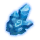

Частица времени
Предметы / Ключи
Открыть в интерактивной вики →
| Вес | 0 |
|---|
Описание
Остаток Призрачной Орды. Позволяет получить доступ в Город Тарула.
Этот предмет нельзя продать.
Этот предмет нельзя продать.
Рецепт
Покупка: 150k + 10
Покупка: 300k + 10 + 25
Покупка: 1kk + 10 + 50
Покупка: 300k + 10 + 25
Покупка: 1kk + 10 + 50